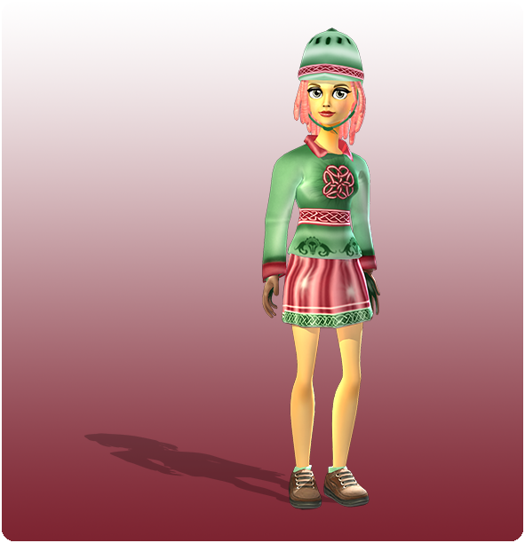

Hello everyone!
Here is this week's exciting update!
New quests:
The people of Valedale are terribly busy and they need some help. Ask Claire what you can do for them!
New collector's outfit:
VAn exclusive collector's outfit is now available in Valedale! This outfit is inspired by the Keepers of Aideen and is available in the reputation shop in Valedale!

Horse XP:
You can now level up your horse to level 13! (Your horse's XP will increase when you complete the daily races.)
New decorations in Fort Pinta:
You can now find even more pretty decorations for your horse in the decoration shop in Fort Pinta!
Bug fixes:
The Wolf quest chain and the Chicken quest chain is now fixed!